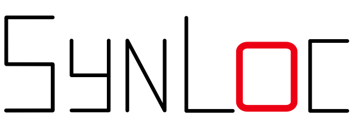

synloc: A Local Resampler Algorithm to Create Synthetic Data

synloc is an algorithm to sequentially and locally estimate distributions to create synthetic values from a sample. The proposed methodology can be combined with parametric and nonparametric distributions.
Installation
synloc can be installed through PyPI:
pip install synloc
(not done yet) # Examples
Assume that we have a sample with three variables with the following distributions:
The distribution can be generated by tools module in synloc:
[1]:
from synloc.tools import sample_trivariate_xyz
data = sample_trivariate_xyz() # Generates a sample with size 1000 by default.
Creating synthetic values with Multivariate Normal Distribution
Initializing the resampler:
[2]:
from synloc import LocalCov
resampler = LocalCov(data = data, K = 30)
Subsample size is defined as K=30. Now, we locally estimate the multivariate normal distribution and from each estimated distributions we draw “synthetic values.”
[3]:
syn_data = resampler.fit()
100%|██████████| 1000/1000 [00:01<00:00, 687.53it/s]
The default sample size is the size of the original sample (i.e., 1000). It can be changed while fitting the distributions:
syn_data = resampler.fit(100) # a sample with size 100 created.
syn_data is a pandas.DataFrame where all variables are synthesized.
Comparing the original sample using a 3-D Scatter:
[4]:
resampler.comparePlots(['x','y','z'])
Creating synthetic values with Gaussian Copula
Initializing the resampler:
[5]:
from synloc import LocalGaussianCopula
resampler = LocalGaussianCopula(data = data, K = 30)
We locally estimate the Gaussian Copula and from each estimated distributions we draw “synthetic values.”
[6]:
syn_data_copula = resampler.fit()
100%|██████████| 1000/1000 [00:03<00:00, 272.71it/s]
Comparing the original sample using a 3-D Scatter:
[7]:
resampler.comparePlots(['x','y','z'])
Even though the distribution of the original sample substantially differs from multivariate normal, locally estimated distributions can replicate the original distribution quite accurately.
Customized Models
kNNResampler class can be used to utilize estimate and resample from any distributions.
functional Principal Component Analysis (fPCA)
For example, if the original sample is high-dimensional data, the user can reduce the dimension with fPCA. It is possible to implement it with FPCADataGenerator function in Synthia package:
[8]:
from synloc import kNNResampler
from synloc.tools import stochastic_rounder
from synthia import FPCADataGenerator
class LocalFPCA(kNNResampler):
def __init__(self, data, K = 30, normalize = True, clipping = True, Args_NearestNeighbors = {}):
super().__init__(data, K, normalize, clipping, Args_NearestNeighbors, method = self.method)
def method(self, data):
generator = FPCADataGenerator()
generator.fit(data, n_fpca_components=2)
return generator.generate(1)[0]
Using kNNResampler as a parent class, we created LocalFPCA. The key component is defining the method for kNNSampler.
super().__init__(data, K, normalize, clipping, Args_NearestNeighbors, method = self.method)
In the LocalFPCA class we define the self.method:
def method(self, data):
generator = FPCADataGenerator()
generator.fit(data, n_fpca_components=2) # reducing dimension to 2
return generator.generate(1)[0]
Example
[9]:
resampler = LocalFPCA(data = data)
resampler.fit()
resampler.comparePlots(['x','y','z'])
100%|██████████| 1000/1000 [00:02<00:00, 346.47it/s]
Problem with Discrete Variables
So far, we assumed that original data set contains only continuous variables. It is possible to address this problem by rounding these variables (stochastically or deterministically), or we can use some multivariate distributions that can handle the mixed type variables. Then, we need to define a new a subclass of kNNSampler.
One solution is it use mixedvines package. It allows to specify the discrete type variables.
[10]:
from synloc import kNNResampler
from mixedvines.mixedvine import MixedVine # pip install mixedvines
class LocalMixedVine(kNNResampler):
def __init__(self, data, cont_cols, K = 30, normalize = True, clipping = True, Args_NearestNeighbors = {}):
super().__init__(data, K, normalize, clipping, Args_NearestNeighbors, method = self.method)
self.cont_cols = cont_cols
def method(self, data):
generator = MixedVine.fit(data.values, self.cont_cols)
return generator.rvs(1)[0]
LocalMixedVine takes the argument cont_cols which is a boolean list. True if it is a continuous variable, False if it is discrete. Further, specification can be done following the documentation.
Example
[29]:
import warnings
import pandas as pd
warnings.filterwarnings("ignore", category=RuntimeWarning)
data2 = pd.read_stata('../extract.dta')
data2 = data2[['age','educ', 'annwage']]
data2 = data2[~data2.isna().any(1)]
data2.age = data2.age.astype('int')
data2.educ = data2.educ.astype('int')
data2 = data2.sample(1000)
resampler = LocalMixedVine(data = data2, K = 50, cont_cols = [False, False, True])
resampler.fit()
resampler.comparePlots(['age','educ', 'annwage'])
100%|██████████| 1000/1000 [02:04<00:00, 8.05it/s]
[33]:
# Original sample looks like
print(data2.head())
age educ annwage
10538 28 12 22801.0
11715 34 16 16000.0
3544 31 11 12500.0
10149 36 13 19000.0
3918 28 16 16993.0
[32]:
#synthetic sample looks like
print(resampler.synthetic.head())
age educ annwage
0 29 12 16236.643091
1 33 16 18432.093681
2 30 11 12190.666403
3 36 13 20126.695065
4 27 15 23331.840903
[1]:
!jupyter nbconvert --output-dir='..' --to markdown README.ipynb
C:\ProgramData\Anaconda3\lib\site-packages\traitlets\traitlets.py:2202: FutureWarning: Supporting extra quotes around strings is deprecated in traitlets 5.0. You can use '..' instead of "'..'" if you require traitlets >=5.
warn(
[NbConvertApp] WARNING | Config option `kernel_spec_manager_class` not recognized by `NbConvertApp`.
[NbConvertApp] Converting notebook README.ipynb to markdown
[NbConvertApp] Support files will be in README_files\
[NbConvertApp] Making directory ..\README_files
[NbConvertApp] Making directory ..\README_files
[NbConvertApp] Making directory ..\README_files
[NbConvertApp] Making directory ..\README_files
[NbConvertApp] Writing 9328 bytes to ..\README.md